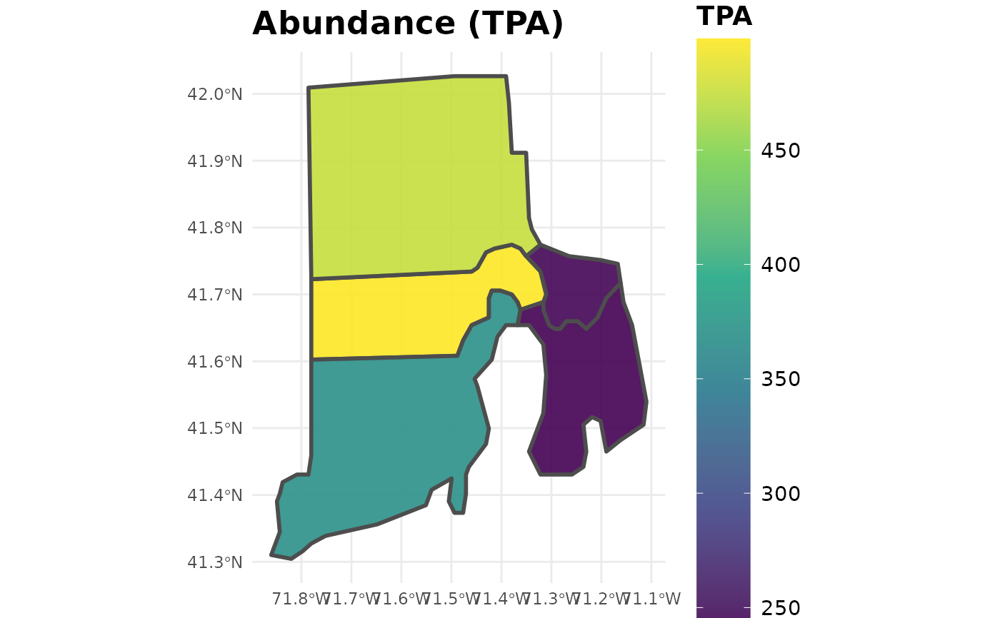
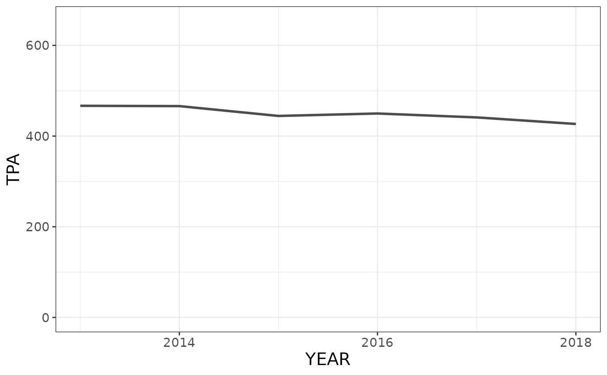
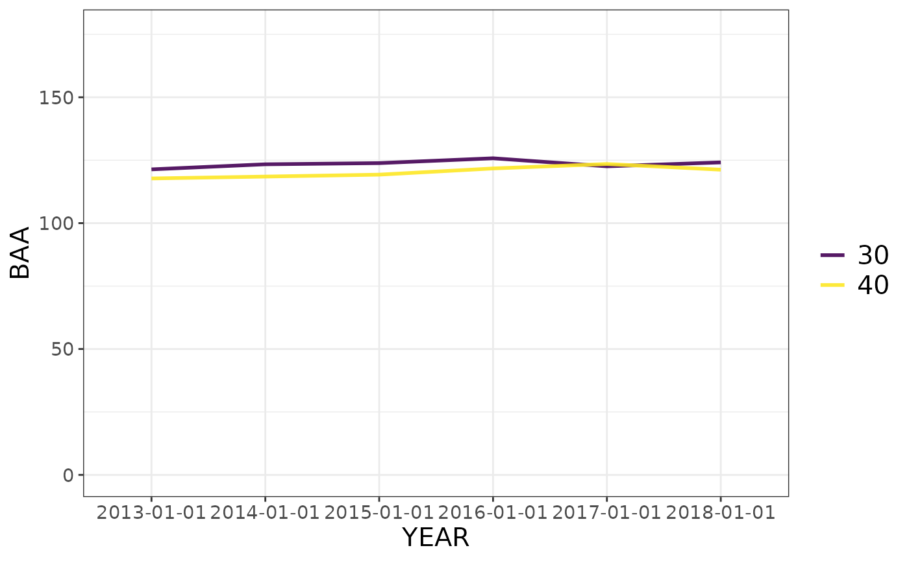
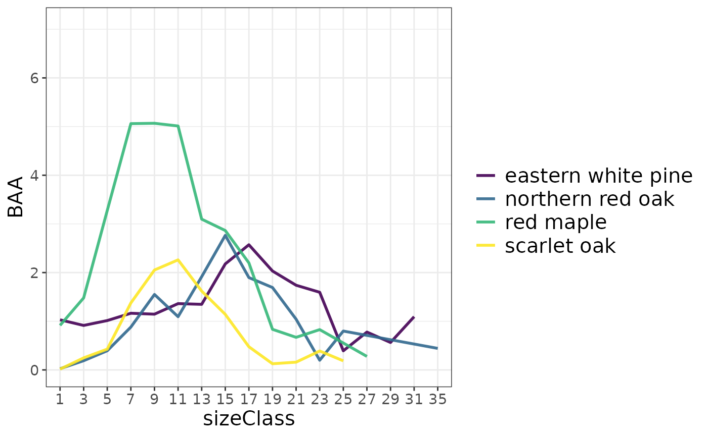

Static and animated plots of FIA summaries
plotFIA.RdDefault behavior for non-spatial summaries produces time-series plots, and for spatial summaries (class sf) produces choropleth maps. For non-spatial summaries, the user may specify the grp parameter to produce plots with multiple lines, colored by a grouping variable. Additionally, users may specify an x-axis to produce plots other than time series (e.g. BAA (y) by size class (x) colored by species (grp)).
Usage
plotFIA(data, y = NULL, grp = NULL, x = NULL, animate = FALSE, facet = FALSE,
se = FALSE,n.max = NULL, plot.title = NULL, y.lab = NULL, x.lab = NULL,
legend.title = NULL, legend.labs = waiver(), limits = c(NA, NA),
color.option = 'viridis', line.color = "gray30", line.width =1,
min.year = 2005, direction = 1, alpha = .9, transform = "identity",
text.size = 1, text.font = '', lab.width = 1, legend.height = 1,
legend.width = 1, device = "png", savePath = NULL, fileName = NULL)Arguments
- data
dataframe,
sfobject, orFIA.Databaseobject; FIA summary produced from otherrFIAfunctions (e.g.tpa,biomass, etc.). Also acceptsFIA.Database, will return map of plot locations.- y
variable contained in
datawhich will be used as y-axis or to fill polygons (spatial). NOT quoted.- grp
variable contained in
datawhich will be used as a grouping variable. Not meaningful for spatial summaries. NOT quoted.- x
variable contained in
datawhich will be used as a x-axis in place of time. If NULL, time-series plot will be produced. Not meaningful for spatial summaries. NOT quoted.- animate
logical; if TRUE, produces temporally animated plots.
- facet
logical; if TRUE, produces temporally grouped plots (stationary).
- se
logical; if TRUE, plots error bars along with estimates. All error bars represent 95% confidence.
- n.max
numeric; maximum number of groups to plot. If positive, will plot the top
ngroups with respect toy, and if negative, will plot the bottomn. Not meaningful for spatial summaries.- plot.title
character; plot title.
- y.lab
character; y-axis label. Not meaningful for spatial summaries.
- x.lab
character; x-axis label. Not meaningful for spatial summaries.
- legend.title
character; title for legend.
- legend.labs
character; labels for legend values.
- limits
numeric vector of length 2; minumum and maximum of continuous scale for legend.
- color.option
character; one of: "viridis" (default), "magma", "inferno", "plasma", or "cividis".
- line.color
character; color of plotted line (non-spatial) or polygon outline color (spatial).
- line.width
numeric; scalar for plotted line width (non-spatial) polygon outline width (spatial). Specify
lineWidth = 0for no outline.- min.year
numeric; earliest year to be included in animation. FIA data is sparse in years prior to 2005 and estimates are unlikely to be available.
- direction
numeric; sets the order of colors in the scale. If 1, the default, colors are ordered from darkest to lightest. If -1, the order of colors is reversed.
- alpha
numeric; alpha transparency, a number in [0,1], see argument alpha in
hsv.- transform
character; transformations to apply to plotted variable
y. Options include: "asn", "atanh", "boxcox", "exp", "identity", "log", "log10", "log1p", "log2", "logit", "reciprocal", "reverse", "sqrt".- text.size
numeric; scalar for text size (e.g. text.size = 2 would be twice the default size).
- text.font
character; font family. Choose from: 'Short', 'Canonical', 'mono', 'Courier', 'sans', 'Helvetica', 'serif', 'Times', 'AvantGarde', 'Bookman', 'Helvetica-Narrow', 'NewCenturySchoolbook', 'Palatino', 'URWGothic', 'URWBookman', 'NimbusMon', 'URWHelvetica', 'NimbusSan', 'NimbusSanCond', 'CenturySch', 'URWPalladio', 'URWTimes', or 'NimbusRom'.
- lab.width
numeric; scalar for legend title width. This value controls text wrapping in title.
- legend.height
numeric; scalar for legend height.
- legend.width
numeric; scalar for legend width.
- device
character; device to use for image save. Can either be a device function (e.g. png()), or one of "eps", "ps", "tex" (pictex), "pdf", "jpeg", "tiff", "png", "bmp", "svg" or "wmf" (windows only).
- savePath
character; path to save plot to (combined with fileName).
- fileName
character; file name to create on disk.
Details
To produce spatial plots, summaries must be returned as spatial objects (e.g. specify returnSpatial = TRUE when computing summaries using tpa). For animated plots, also requires that multiple reporting years be present in the summary data (animations iterate through time). For a map of plot locations contained in your FIA.Database, specify the object as the data argument.
For objects produced with byPlot = TRUE and returnSpatial = TRUE (spatial point patterns), a categorical grouping variable can be specified to grp. Point radii will reflect magnitude of y and color will reflect categorical groups (grp).
If animate = FALSE and multiple reporting years are present in the summary, produces plots of the most recent subset.
Specify savePath and fileName to save plots (animations saved as .gif files).
Examples
## Load data from the rFIA package
data(fiaRI)
data(countiesRI)
# \donttest{
################### SPATIAL PLOTTING #############################
## Compute abundance estimates for live stems in Rhode Island
## for all available inventory years, summarized by counties and
## return a spatial object
tpaRI <- tpa(fiaRI, polys = countiesRI, returnSpatial = TRUE)
## Produce animated plot
if(interactive()) {
plotFIA(tpaRI, y = TPA, animate = TRUE, legend.title = 'Abundance (TPA)')
}
## With a square root transform
if(interactive()) {
plotFIA(tpaRI, y = TPA, animate = TRUE, legend.title = 'Abundance (TPA)', transform = 'sqrt')
}
## Same as above, but for static plots (most recent subset from RI)
tpaMR <- tpa(clipFIA(fiaRI), polys = countiesRI, returnSpatial = TRUE)
## Produce animated plot
plotFIA(tpaMR, y = TPA, animate = FALSE, plot.title = 'Abundance (TPA)')

################# NON-SPATIAL PLOTTING #########################
## Same as above, but return a non-spatial object (no spatial grouping)
tpaRI <- tpa(fiaRI)
## Plot TPA over time
plotFIA(tpaRI, TPA)

## BAA over time, grouped by ownership group
tpaRI_own <- tpa(fiaRI, grpBy = OWNGRPCD)
plotFIA(tpaRI_own, y = BAA, grp = OWNGRPCD)

## BAA by size class (not a time series) grouped by species
tpaRI_sc <- tpa(clipFIA(fiaRI), bySpecies = TRUE, bySizeClass = TRUE)
plotFIA(tpaRI_sc, y = BAA, grp = COMMON_NAME, x = sizeClass, n.max = 4)# Only the top 4

# }